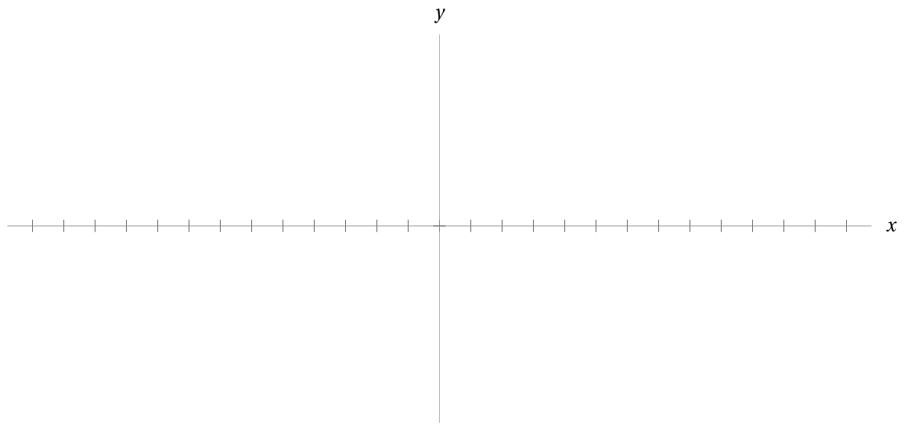
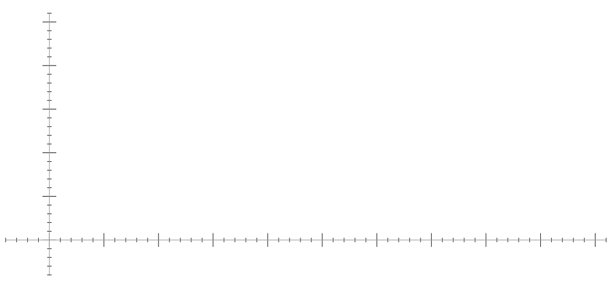

Consider the function \(f\) defined piecewise as:
\[
f(x) = \begin{cases}
-x &\text{ if } x \leq -8 \text{ or } x \gt 4
\\ \frac{1}{2}(x+7)^{1.61} &\text{ if } -7 \leq x \leq -1
\\ (x-3)^2-5 &\text{ if } -1 \lt x \leq 4
\end{cases}
\]
What are the values of the following?
\(f(-8)\)
\(f(4)\)
\(f(0)\)
\(f(-1)\)
\(f(1)\)
\(f(-7)\)
\(f(5)\)
\(f(-3)\)
Based on its definition what can we infer
the domain of \(f\) to be?
Graph the function \(y = f(x)\) on the axes below,
and after you do, conclude what the range
of \(f\) must be.

What value(s) might \(x\) be if
\(\left|x^2-3x\right| = 2(x-1)?\)
In 2024, the city of Grand Junction
charges residents for city water use
on a tiered system: the more water you use,
the higher the rate you’re charged per gallon.
Their rates can be distilled into
the following piecewise-defined function,
where a resident is charged \(C(w)\) dollars for using
\(w\) thousand gallons of water that month.
\[
C(w) = \begin{cases}
14.81 + 3.17w &\text{ if } 0 \lt w \leq 2
\\21.15 + 4.01(w-2) &\text{ if } 2 \lt w \leq 10
\\53.23 + 4.75(w-10) &\text{ if } 10 \lt w \leq 20
\\100.73 + 5.84(w-20) &\text{ if } 20 \lt w
\end{cases}
\]
Graph the function \(y = C(w).\)
Be sure to have some forethought
on the scale of your \(x\)- and \(y\)-axis
before you begin.

How much will GJ charge a resident
that uses \(1600\) gallons of water in a month?
What about a resident that uses \(7200\) gallons?
Suppose a GJ resident tells you
they had to pay $88 on their water bill.
How many gallons of water did they use that month?
Challenge
Similar to the tiers at which
Grand Junction residents are charged per water usage,
the US government sets annual tax rates
according to a tiered structure.
The tiers in this case are called tax brackets.
Look up the standard deduction
(and understand what it is)
and the tax rates per tax bracket for this year,
and come up with a function \(f,\)
which must be defined piecewise,
that will describe exactly how much a single person
with \(x\) dollars of income for the year
who takes the standard deduction
will have to pay in taxes.